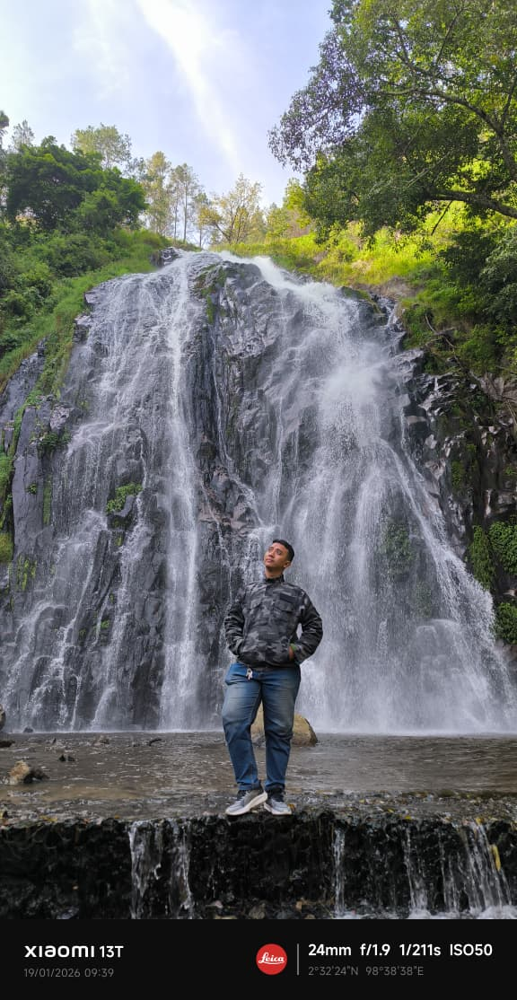

Foto Profil
(Foto Profil Muhammad Rifat)
📝 Tentang Saya
Halo! Perkenalkan nama saya Muhammad Rifat Shahjahan Lubis. Saya lahir di Medan pada tanggal 17 Juli 2004. Saat ini saya Mahasiswa di UMSU Fakultas FIKTI jurusan Sistem Informasi (2024) dan juga bekerja sebagai Waiter di Madani Hotel Medan.
Saya memiliki ketertarikan besar dalam bidang teknologi, terutama web development dan artificial intelligence. Saya selalu bersemangat untuk belajar hal-hal baru dan mengembangkan keterampilan saya.
📋 Data Pribadi
- Nama Lengkap: Muhammad Rifat Shahjahan Lubis
- Tempat, Tanggal Lahir: Medan, 17 Juli 2004
- Alamat: Jln. Terusan Gang Amsur No.80 I, Bandar Setia, Deli Serdang, Sumatera Utara
- Status: Belum Menikah
- Agama: Islam
- Kewarganegaraan: Indonesia
🎨 Hobi & Minat
- Programming dan coding
- Membaca buku teknologi dan Automotive
- Berenang dan jogging
- Traveling ke tempat baru
- Bermain Game PUBG & E-Football
- Menonton Drama China
🎓 Riwayat Pendidikan
- SD Negeri 064037 Medan (2010 - 2016) – Lulus dengan nilai rata-rata 9.6
- SMP Negeri 27 Medan (2016 - 2019) – Lulus dengan nilai rata-rata 8.7
- SMA Swasta Budisatrya Medan (2019 - 2022) – Jurusan IPA, lulus dengan nilai rata-rata 8.5
- Universitas Muhammadiyah Sumatera Utara (2024 - sekarang) – Jurusan Sistem Informasi Rata-Rata IPK Semester 3 3.69
💻 Keterampilan
- Programming Languages: HTML, CSS, JavaScript, Python, Java
- Frameworks: React, Node.js, Express
- Database: MySQL, MongoDB, PostgreSQL
- Tools: Git, VS Code, Docker, Linux
- Languages: Indonesia (Native), English (Advanced)
💼 Pengalaman Kerja
- Casual Waiter Freelance - Jiyo boutique & Inn (2021 - 2022) – Pekerja paruh waktu sebagai waiter.
- Waiter Banquette - Madani Hotel Medan (2022 - 2023) – Menangani Urusan Dlam Set-up Ruangan Acara.
- Cashier Hafla Restaurant - Madani Hotel Medan (2023 - 2024) – Sebagai Cashier Yang menangani Segala Pembayaran Di Hafla Restaurant
- Waiter Hafla Restaurant - Madani Hotel Medan (2024 - sekarang) – Melayani Tamu Dalam Memesan Dan Menawarkan Makanan Dan Minuman
🏆 Pencapaian
- IPK baik
- Mampu membuat segala jenis minuman coffee (kecuali latte art)
- Dapat mengelola database dan membuat query SQL
⏰ Jadwal Harian (Sekarang)
| Waktu | Kegiatan |
|---|---|
| 04.30-06.00 | Bangun, Sahur, Mandi, dan persiapan untuk kuliah, Tidur sebentar |
| 07.30-08.00 | Siap siap untuk kuliah |
| 08.00-12.00 | Melaksanakan perkuliahan |
| 13.00-13.30 | Shalat Zuhur dan baca Al Quran |
| 13.30-14.30 | Berangkat ke tempat kerja |
| 15.00-16.30 | bekerja,Sholat Ashar |
| 18.30-21.30 | Buka puasa, Sholat Maghrib, Sholat Isya, lanjut bekerja |
| 23.00-23.40 | Pulang bekerja dan perjalanan nya |
| 24.00-04.30 | Tidur |
📞 Kontak Saya
- Email: muhammadrifatshahjahan@gmail.com
- Telepon: +62 821-8018-1434
- GitHub: github.com/Hayabusa-21
- Website: Muhammad-rifat-introduce.com